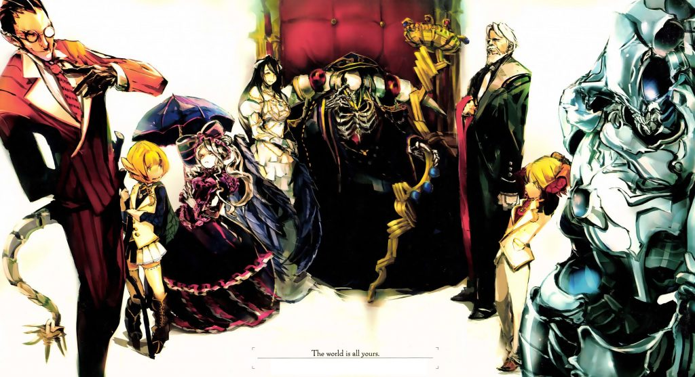

Overlord
Volumen 1: El Rey No-Muerto
Prólogo
Frente a la joven y a su pequeña hermana, el caballero con armadura levantó su espada. Tener piedad era tomar la vida de un sólo golpe. La espada, bañada por la luz del sol, brilló en el cielo. La joven cerró los ojos y se mordió el labio inferior. Su expresión mostraba que nunca quiso que pasara algo como eso. Simplemente lo aceptaba porque no había nada que pudiera hacer. Si tuviera algún poder, podría haberlo usado contra el hombre frente a ella y por consiguiente escapar, pero no tenía ese poder.
Entonces sólo existía una conclusión, ella moriría allí. La espada cortó el aire…
…Pero ella no sintió dolor alguno.
Abrió los ojos que mantenía fuertemente cerrados y lo primero que logró ver fue la espada que se había detenido a mitad de camino. Lo siguiente fue que el caballero que la blandía había dejado de moverse, como si estuviera congelado. La atención del caballero ya no estaba centrada en la joven. El estado completamente indefenso del caballero revelaba la sorpresa que sentía. Como si la mirada de éste la guiara, la joven también volvió la mirada en la misma dirección. Entonces vio… Desesperación.
Había oscuridad. Una oscuridad pura tan delgada como el papel, y sin embargo de una profundidad inimaginable. Había salido de la tierra en una forma ovoide con la sección inferior cortada. Era una escena que evocaba misticismo y un miedo indescriptible.
¿Una puerta? —Eso fue lo que la joven pensó cuando la vio.
Entonces, después de que su corazón comenzara a latir una vez más, su especulación se confirmó.
*Dripp*
Algo cayó desde la oscuridad.
En el instante en que se dio cuenta de lo que era — ¡HIII! —La joven dio un grito desgarrador.
Una existencia que ningún mortal podría vencer. Esferas rojas titilaban como llamas turbias dentro de las órbitas de su blanco cráneo. Mientras miraba a las 2 niñas, ellas sintieron como si mirara fríamente a su presa. En sus manos, sin carne ni piel, tenía un báculo sagrado de soberana belleza y sin embargo aterrador. Era como si la Muerte misma, vestida en una elaborada túnica completamente negra, hubiera nacido en este mundo con la oscuridad del otro mundo. El aire se congeló en un parpadeo, era como si el tiempo mismo se hubiera detenido ante la llegada de un ser absoluto. La joven se había olvidado de respirar, como si su alma le hubiese sido robada. En esta situación, cuando incluso su sentido del tiempo parecía haber desaparecido, la joven comenzó a hiperventilar y a respirar como si le faltara el aire.
La Muerte ha venido a llevarme —Eso fue lo que pensó, pero de pronto sintió que algo no estaba bien, ya que el caballero que estaba tras su vida había dejado de moverse también.
Urghh…—Se oyó un silencioso gemido.
¿De dónde venía? Sintió como si viniera de ella misma, al igual que de su pequeña hermana, y del caballero con la espada en alto frente a ella. Muy despacio sus dedos, desprovistos de carne, se movieron y extendió la mano. No hacia las niñas, sino hacia el caballero, como si quisiera agarrar algo. La joven quería dejar de mirar, pero estaba tan asustada que no podía hacerlo. Sentía que sería testigo de algo mucho más aterrador si apartaba la vista.
[Tomar Corazón (Grasp Hearth)]
La muerte encarnada hizo un gesto de agarrar algo, y un fuerte sonido metálico se oyó al lado de la joven. Tenía miedo de desviar su mirada de la Muerte, pero llevada por la curiosidad volvió la mirada y vio al caballero tendido sobre la tierra. No se movía más. Estaba muerto. La crisis que amenazaba la vida de la joven había desaparecido como si todo hubiese sido un mal chiste. Sin embargo, no podía alegrarse porque la Muerte había cambiado de forma y se manifestaba ante ella de manera evidente. Ante la mirada asustada de la joven, ésta se movió hacia ella. La oscuridad que se reunía en el centro de su campo de visión aumentó.
Me va a envolver— Pensando eso, la joven abrazó fuertemente a su hermana, pensar en escapar ya no era una opción.
Si el oponente fuese humano, hubiera actuado de alguna forma con un poco de esperanza. Pero lo que tenía frente a sus ojos era una existencia que fácilmente hacía desaparecer esos pensamientos.
Por favor al menos déjame morir sin dolor —Orar era todo lo que podía hacer.
Su pequeña hermana estaba aferrándose a su cintura con todas sus fuerzas, temblando de miedo. Quería salvarla, pero no podía. Sólo podía pedirle perdón por su falta de fuerza. Simplemente agradecía que no se sintiera tan sola, porque se iban a ir juntas.
Y entonces…
